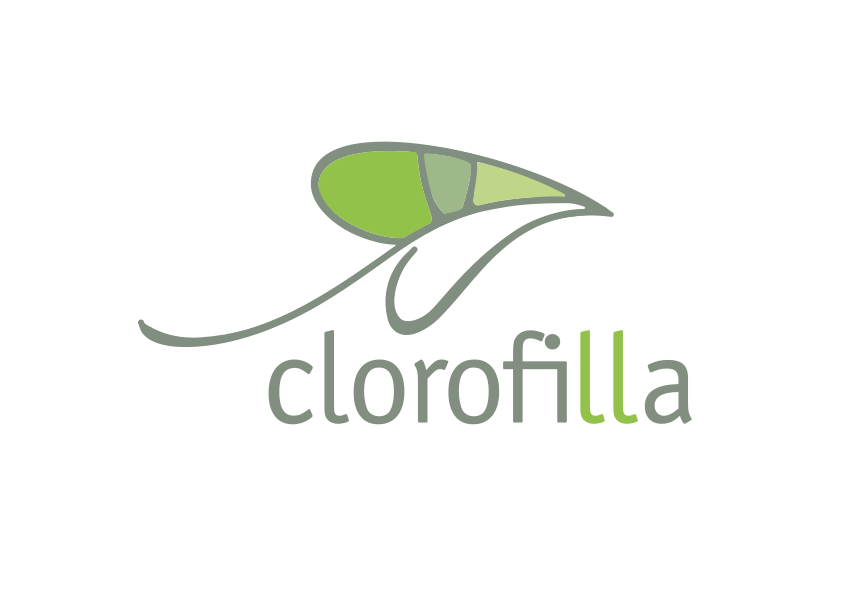

Voltar ao siteAtualizada em 1º de setembro de 2026
O resumo, em três frases.
Este site só recebe dados seus se você preencher o formulário de contato: nome, e-mail, telefone e a mensagem que escrever.
Esses dados chegam por e-mail à Clorofilla e servem para uma coisa só — responder você. Nada é guardado em banco de dados, e o site não usa cookies nem rastreia sua navegação.
A Clorofilla Consultoria Ambiental é quem decide como os dados enviados por este site são tratados. Os dados de identificação estão no fim desta página.
Apenas o que você digita no formulário de contato:
Se você não preencher o formulário, o site não recebe nenhum dado seu. Navegar aqui não deixa rastro em nossos sistemas.
Para responder ao seu contato e conversar sobre o assunto que você trouxe. Nada além disso. Não enviamos mala direta, newsletter nem propaganda a partir dessas mensagens.
A base legal para esse tratamento é o seu próprio pedido de contato — em termos da LGPD, o interesse legítimo de responder a quem nos procura e os procedimentos preliminares a um eventual contrato.
Isto não é promessa de intenção: é como o site foi construído. Não há código de rastreamento nas páginas.
A mensagem sai do seu navegador, passa pela empresa que hospeda este site e chega ao serviço de e-mail usado pela Clorofilla. São etapas técnicas necessárias para a mensagem existir — essas empresas atuam como operadoras e não usam seus dados para finalidade própria.
Fora isso, o conteúdo do seu contato é lido apenas por quem trabalha na Clorofilla e precisa respondê-lo.
As mensagens permanecem na caixa de e-mail da Clorofilla enquanto durar o atendimento e pelo prazo que a lei exigir para o registro de tratativas comerciais. Depois disso, são descartadas. Você pode pedir a exclusão antes — é o item seguinte.
A Lei Geral de Proteção de Dados (Lei 13.709/2018) garante a você, entre outros, o direito de:
Para exercer qualquer um deles, escreva para contato@clorofillaambiental.com.br. Respondemos no prazo da lei.
O blog da Clorofilla fica em endereço separado deste site, em blog.clorofillaambiental.com.br, e roda em outra plataforma. Esta política trata apenas do site que você está lendo agora; o blog tem funcionamento próprio.
Se o site passar a coletar algo diferente, esta página muda antes — e a data no topo mostra quando isso aconteceu.
Sobre privacidade ou sobre qualquer outro assunto, o endereço é o mesmo: contato@clorofillaambiental.com.br.